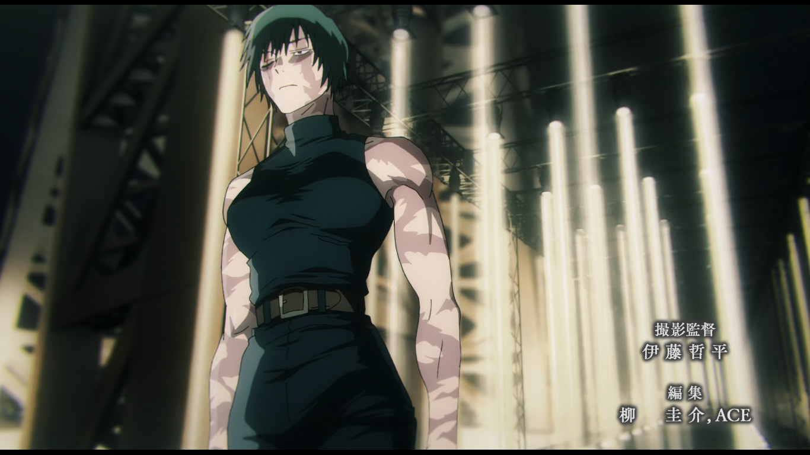

MAKI
Maki Zenin is a powerful character from Jujutsu Kaisen.
She was born into the elite Zenin clan but lacked cursed energy.
Because of this, she was treated as inferior by her family.
Despite rejection, she trained her body to superhuman levels.
Maki relies on cursed tools instead of cursed techniques.
She aims to destroy the corrupt traditions of the Zenin clan.
Her bond with her twin sister Mai shaped her destiny.
She grows into one of the strongest physical fighters in the series.
Maki represents resilience and rebellion.
Her strength proves power isn’t inherited — it is built.
Zenin Family Tree
Naobito Zenin: Former head of the Zenin clan and elite sorcerer.
Naoya Zenin: Arrogant heir who underestimated Maki.
Ogi Zenin: Father of Maki and Mai, obsessed with clan honor.
Maki Zenin: Clan member who defied tradition.
Mai Zenin: Maki’s twin sister with limited cursed energy.
Jinichi Zenin: Senior clan fighter loyal to hierarchy.
Chojuro Zenin: Conservative elder of the clan.
Ranta Zenin: Sorcerer with paralysis abilities.